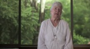
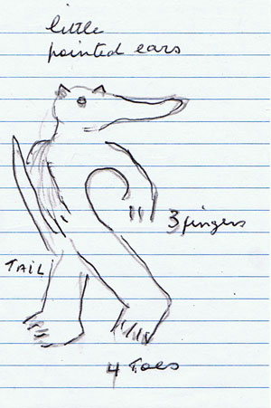
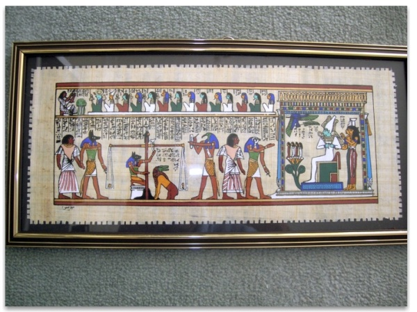
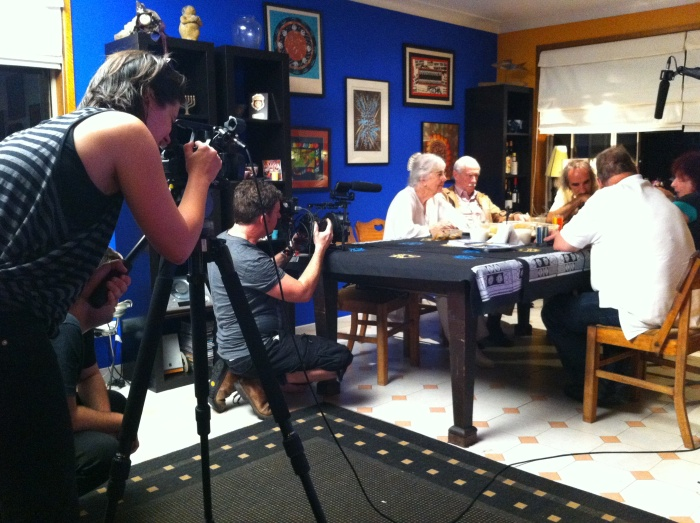

Kariong i starożytni Egipcjanie w Australi
Jak wiele lat temu powiedział Alcheringa, miejsce z egipskimi hieroglifami w Kariong stanowi ‘Bramę’ a same glify znaczą różne rzeczy dla różnych ludzi. Powiedział też, że z czasem udostępni klucze do tej historii. I to się już stało. Alcheringa w Kariong dnia 11 grudnia 2011 r.
Film dokumentalny 'Wirritjin' – jest to słowo lub filozofia ludzi Ramindjeri (rdzennych mieszkańców Wyspy Kangurów) oznaczające "Blackfella Whitefella Dreaming together (Faceci ciemny i biały śniący razem)."
11 grudnia 2011 r. odwiedziliśmy Kariong, aby wysłuchać dwóch prelekcji – jednej wygłoszonej przez Steve Stronga, a drugiej – przez dr Hans-Dietera von Senffa.
Spotkaliśmy się też z ekipą nagrywającą film dokumentalny Blackfella Whitefella Dreaming Together. Udzieliłam wywiadu do części o śnieniu ‘Białego faceta,’ w której sfilmowano przekaz Alcheringi.
Ten wywiad możecie obejrzeć także na YouTube (dzięki Olivii Olley i ekipie filmowej).
Zapis tekstowy przekazu Alcheringi można przeczytać tutaj.
Setki, jeśli nie tysiące, ludzi potrafiło rozpoznać swój związek z opisaną historią zwykłych ludzi, którzy przypomnieli sobie, że byli Gwiezdnymi Ludźmi i to jak zostali stworzeni pierwsi ludzie przed dziewięćset tysiącami lat (patrz książka Alcheringa, when the first ancestors were created lub e-książka Gwiezdni ludzie ponownie).
W swoim przekazie Alcheringa odniósł się do swojego przesłania sprzed 16 lat w Kariong na temat egipskich hieroglifów. Wtedy powiedział nam, że miejsce to jest ‘Bramą’ i że glify znaczą różne rzeczy dla różnych ludzi. Powiedział też, że z czasem udostępni klucze do tej historii oraz że więcej faktów zostanie ujawnionych. Tak się też stało.
Nasza historia mówi, że australijscy tubylcy są nie tylko ‘pierwszymi mieszkańcami’ Australii, ale że są też ‘Pierwszymi Ludźmi.’ Ci rdzenni mieszkańcy mówią, że nie przyszli skądinąd, ale że ich początki są w tym kraju, który teraz nazywamy Australią, i że później rozeszli się do innych miejsc na Ziemi.
Starsi plemienia Ramindjeri utrzymują, że ich przodkowie ośmiokrotnie okrążyli nasz glob.
Oto cytat wypowiedzi Wujka Ruebena Kelly, Starszego plemienia Dhungutti (Kempsey) i ostatniego człowieka w NSW (Nowej Południowej Walii), który ma prawo przeprowadzać ceremonię inicjacji chłopców: Nasze legendy mówią, że przyszliśmy na waszą planetę w statku kosmicznym wykonanym z energii. Gdy wpadł w atmosferę Ziemi, zamienił się w kryształ.
Ta historia jest podobna do tej, którą pamiętamy jako gwiezdni ludzie, chociaż w naszej pamięci statek kosmiczny został zaatakowany. Ale teraz wiem też, że ten statek kosmiczny jest obecnie kryształem Moldavite.
Starsi innych plemion mówią, że ich przodkowie przybyli z Plejad i wskazują na owe 7 gwiazd na niebie.
Znam inną historię wywodzącą się z tego samego miejsca (Kariong) opisaną przez Paula White’a. Według niej glify zostały rozszyfrowane w postać losów dwóch egipskich książąt i ich załogi ocalałych z uszkodzonej łodzi. Jeden z książąt został ukąszony przez węża i zmarł. Podobno działo się to 5000 lat temu (www.crystalinks.com/egyptaustralia.html).
Archeologowie i egiptolodzy nie potrafili odszyfrować hieroglifów a to, w połączeniu z pogłoskami, że jakiś starszy człowiek był widziany przez strażnika parku jak żłobi glify na ścianie skały, sprawiło, że glify tego rejonu uznano za podróbkę.
Opinię tę podważyli liczni naukowcy, którzy przedstawili dowody na autentyczność miejsca, na to, że jest to prawdziwy grobowiec starożytnych Egipcjan.
Słuchałam wykładu Steve Stronga, który mówił, że Egipcjanie przybyli tutaj 4500 lat temu. Powiedział też, że wierzy iż przybyli tu w pielgrzymce, ponieważ wiedzieli, że starożytni Australijczycy byli tutaj przez bardzo długi czas. Pomyślałam: ‘Zgadam się z tym…’ Narysowałam taki oto rysunek w egipskim stylu:

Obraz reptilianina podobnego do drako widzianego na Cave Hill (Górze Groty)
w Centralnej Australii (rysunek wykonany za pozwoleniem)
[napisy na rysunku: 'małe spiczaste uszy' (u góry), '3 palce' (z prawej),
'ogon' (z lewej), '4 palce' (u dołu)]
Takie rysunki widziałam na sklepieniu w grocie Siedmiu Sióstr z Plejad na Cave Hill, w Centralnej Australii. Na tym sklepieniu zostały narysowane czarnym węglem drzewnym datowanym na 20 tysięcy lat. Postać ta wyglądała bardzo podobnie do ‘człowieka-krokodyla,’ znajdującego się na papirusie obrazującym Dzień Sądu z egipskiej legendy.

Zdjęcie
obrazu Dnia Sądu
Mówi się, że człowiek-krokodyl o zielonej głowie zjadał część serca zmarłego, jeśli było zbyt ciężkie na przejście do nieba (tutaj jest artykuł na ten temat).
Niedawno Steve Strong opublikował artykuł w ostatnim numerze New Dawn Magazine (January-February 2012).Steve spędził sporo czasu z rdzennymi mieszkańcami i przeszedł inicjację stania się jednym z nich. Przez lata on i jego syn Evan zebrali ogromną ilość informacji na temat istnienia starożytnych Egipcjan, którzy odwiedzili ten kraj 4500 lat temu. Twierdzą, że bardzo duży obszar z rysunkami naskalnymi wykonanymi przez rdzennych mieszkańców oraz nowo odkryte hieroglify, niezależne od tych spornych w Kariong, stanowią zbyt ważny materiał, aby go ignorować lub przypisywać dowcipnisiom. Ten obszar musi być chroniony.
Więcej na ten temat możecie przeczytać w witrynie Stevego: http://forgottenorigin.com/
Dr Hans-Dieter von Senff niedawno napisał pracę złożoną w National Library (Bibliotece Narodowej). Mówi on: „Te hieroglify są prawdziwe i znajdowały się w Australii przez jakieś 4500 lat. Te proto-egipskie glify nie są graffiti, jak twierdzą różni ‘eksperci’ i ‘egiptolodzy,’ lecz stanowią zapis pozostawiony przez człowieka prehistorycznego. Niosą spójną treść zrozumiałą nawet po 4500 latach. Miejsce to nie jest żadną podróbką, lecz autentycznym archeologicznym odkryciem, czego dowodzi niedawno odkryty drugi zbiór glifów i obecność podziemnego szybu wentylacyjnego.”
Możecie pobrać i przeczytać książkę dr-a Hans-Dietera von Senffa, Ancient Egyptians in Australia (plik pdf, 4.5 MB; jest to wersja przedłożona National Library of Australia) oraz Prohibited Egyptology (plik pdf, 2.9 MB; opis badań egipskich glifów i jaskini pochówków w Kariong).
Oczywiście, nasza praca dotyczyła gwiezdnych ludzi, albo bohaterów nieba, jak niektóre rdzenne ludy ich określają. Wierzę, że starożytni Egipcjanie, którzy przybyli tu 4500 lat temu znali pierwotnych rdzennych mieszkańców i ich pochodzenie od plejadańskich przodków oraz, jak sugerowałam, odwiedzili ten kraj w celach pielgrzymkowych.
W roku 1982 egipska gazeta Cairo Times donosiła, że archeologowie pracujący w Fayum w pobliżu Siwa Oasis w Egipcie odkryli skamieliny kangurów i innych australijskich torbaczy. Możecie o tym przeczytać tutaj. Byłoby ciekawe poznać wiek tych skamielin.
Ludzie mogą być zainteresowani uczestnictwem w innej prelekcji Steve Stronga, która ma zostać wygłoszona 18 lutego. Możecie przeczytać stosowne ogłoszenie prasowe o tym spotkaniu.
„W tym obszarze znajdują się dowody w postaci rycin Aborygenów, form i malowideł łodzi przeznaczonych do podróży po otwartych morzach, konstrukcji astronomicznych, gamy starożytnych symboli egipskich oraz rozmaitości styli i technik. Style są tak liczne i nie pasujące do tego regionu, że wcześniej nazywaliśmy ten region jako odpowiednik Aleksandrii z epoki kamiennej. Ilość, jakość i rozmaitość niesłychanie ważnych świętych miejsc jest taka, że bezwzględnie należy chronić te miejsca i przyległe obszary. Cały ten obszar, a w szczególności region Kariong/Bambera, ma międzynarodowe znaczenie. Co ważniejsze, to co wyryto na płytach skalnych, zbudowane i wymalowane na ścianach grot potwierdza prawdziwość wierzeń aborygeńskich Starszych i zachowanej tradycji o tym, że nie pochodzą oni od starożytnych Afrykańczyków, lecz zawsze byli Australijczykami, że byli pierwszymi morskimi podróżnikami międzykontynentalnymi, pierwszymi Homo Sapiens i że ‘wszyscy inni ludzie świata pochodzą od nas.’ Nie jest to nowa interpretacja historii, lecz tak mówią najstarsze dane faktograficzne, jakie kiedykolwiek istniały. Macie możność zapoznać się z niektórymi argumentami przemawiającymi za tym, że ten kraj jest tak specjalny i tak ważny dla rzucenia światła na o wiele większy zakres historii nie tylko Australii, ale całego świata.”
Steven Strong
|

|